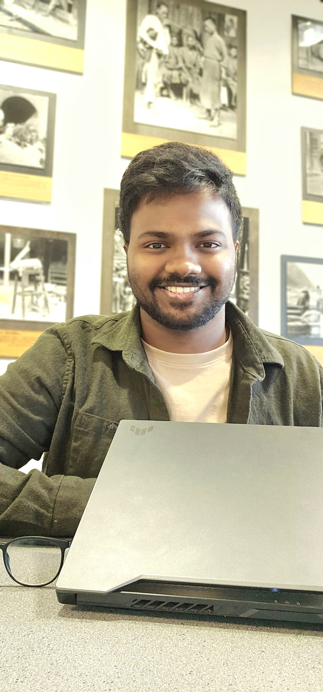

Hi, I'm Dev! A passionate computer science enthusiast, constantly exploring new frontiers in Data Science, Software and web development.
Dev Divyendh Dhinakaran
Currently pursuing a Master's in Computer and Information Sciences at George Mason University, I am passionate about building intelligent, ethical, and scalable systems using technologies at the intersection of Machine Learning, Data Science, and Cloud Computing, I focus on real-world applications in areas like Algorithmic Fairness, Recommender Systems, Edge Deep Learning, and NLP.
I have hands-on experience building cloud-native applications and deploying them using Docker, Kubernetes, and AWS. I’ve designed and implemented CI/CD pipelines using Jenkins and GitHub Actions for microservices and data workflows. My academic and project experience also includes working with relational (Oracle, MySQL) and non-relational (MongoDB, Firebase) databases — writing optimized SQL queries, managing data migrations, and performing document-based aggregations.
I enjoy blending research-driven development with practical problem solving, especially in areas that promote ethical AI and social impact. Constantly exploring new tools and techniques, I’m driven by a curiosity to innovate responsibly and build systems that are not only technically robust, but also fair, transparent, and human-centered.
C, C++, Python, Java, Scala, Haskell, SQL
HTML, CSS, JavaScript, XML, MySQL, Oracle DB, Firebase
Pandas, NumPy, Scikit-learn, TensorFlow, PyTorch, Keras, Seaborn, Matplotlib, OpenCV, NLTK, SpaCy
Spring Boot, Flask, GitHub, Git, Linux, Ubuntu
Apache Spark, Microservices, CI/CD, GitOps
Docker, Kubernetes, AWS, Terraform, Ansible, Jenkins
Projects in Spring Boot, Firebase, Docker, Kubernetes, and full-stack apps
Selected works in machine learning, fairness, unlearning, and recommender systems
Here is a glimpse into some of my research contributions
Authors: Ashwanth K, Dharun Narayanan L K, Dev Divyendh D, Sreehari Krishna S, Vijaya Kumar Sundar, Priyanka Kumar
In this paper, we demonstrate the performance benefits of offloading deep learning workloads to specialized hardware accelerators using a Raspberry Pi 4 and Intel Movidius Neural Compute Sticks. We propose a two-step algorithm that analyzes model complexity using its .xml and .bin files and allocates models to accelerators based on load and complexity. Our findings show a significant FPS improvement and latency reduction using Intel Movidius on edge devices.
Read PaperI'm actively looking for full-time opportunities in Software Development, Data Engineering, or Machine Learning. Feel free to connect with me!